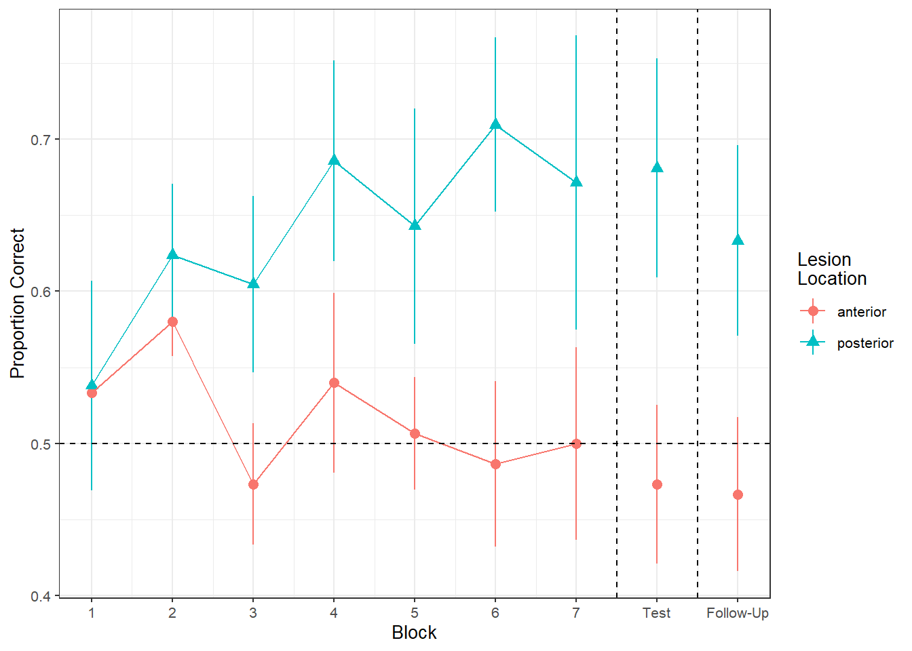

| variable | description |
|---|---|
| motiv | Child's Education Motivation Score (range 0 - 10) |
| funding | Funding ('state' or 'private') |
| schoolid | Name of School that the child attends |
| grade | Child's end-of-year grade average (0-100) |
Practice Datasets
Below are various datasets from these readings and from lectures and exercises across our courses. For each one, there is a quick explanation of the study design which also details the research aims of the project.
Pick one of the datasets to test yourself with fitting, checking, interpreting, and reporting on multilevel models.
schoolmot.csv - motivation and grades in school children
#cross-sectional
#cross-sectional
This dataset contains information on 900 children from 30 different schools across Scotland. The data was collected as part of a study looking at whether education-related motivation is associated with school grades. This is expected to be different for state vs privately funded schools.
All children completed an ‘education motivation’ questionnaire, and their end-of-year grade average has been recorded.
Data are available at https://uoepsy.github.io/data/schoolmot.csv.
lmm_lifesatscot.csv -
#cross-sectional
#cross-sectional
These data come from 112 people across 12 different Scottish dwellings (cities and towns). Information is captured on their ages and a measure of life satisfaction. The researchers are interested in if there is an association between age and life-satisfaction.
Data are available at https://uoepsy.github.io/data/lmm_lifesatscot.csv.
| variable | description |
|---|---|
| age | Age (years) |
| lifesat | Life Satisfaction score |
| dwelling | Dwelling (town/city in Scotland) |
| size | Size of Dwelling (> or <100k people) |
lmm_jsup.csv - Workplace pride
#cross-sectional
#cross-sectional
A questionnaire was sent to all UK civil service departments, and the lmm_jsup.csv dataset contains all responses that were received. Some of these departments work as hybrid or ‘virtual’ departments, with a mix of remote and office-based employees. Others are fully office-based.
The questionnaire included items asking about how much the respondent believe in the department and how it engages with the community, what it produces, how it operates and how treats its people. A composite measure of ‘workplace-pride’ was constructed for each employee. Employees in the civil service are categorised into 3 different roles: A, B and C. The roles tend to increase in responsibility, with role C being more managerial, and role A having less responsibility. We also have data on the length of time each employee has been in the department (sometimes new employees come straight in at role C, but many of them start in role A and work up over time).
We’re interested in whether the different roles are associated with differences in workplace-pride.
Data are available at https://uoepsy.github.io/data/lmm_jsup.csv.
| variable | description |
|---|---|
| department_name | Name of government department |
| dept | Department Acronym |
| virtual | Whether the department functions as hybrid department with various employees working remotely (1), or as a fully in-person office (0) |
| role | Employee role (A, B or C) |
| seniority | Employees seniority point. These map to roles, such that role A is 0-4, role B is 5-9, role C is 10-14. Higher numbers indicate more seniority |
| employment_length | Length of employment in the department (years) |
| wp | Composite Measure of 'Workplace Pride' |
wellbeingwork3.rda - work patterns and mental wellbeing
#longitudinal
#longitudinal
The “Wellbeing in Work” dataset contains information on employee wellbeing, assessed at baseline (start of study), 12 months post, 24 months post, and 36 months post. over the course of 36 months. Participants were randomly assigned to one of three employment conditions:
- control: No change to employment. Employees continue at 5 days a week, with standard allocated annual leave quota.
- unlimited_leave : Employees were given no limit to their annual leave, but were still expected to meet required targets as specified in their job description.
- fourday_week: Employees worked a 4 day week for no decrease in pay, and were still expected to meet required targets as specified in their job description.
The researchers have two main questions: Overall, did the participants’ wellbeing stay the same or did it change? Did the employment condition groups differ in the how wellbeing changed over the assessment period?
Data are available (in .rda format) at https://uoepsy.github.io/data/wellbeingwork3.rda
| variable | description |
|---|---|
| ID | Participant ID |
| TimePoint | Timepoint (0 = baseline, 1 = 12 months, 2 = 24 months, 3 = 36 months) |
| Condition | Employment Condition ('control' = 5 day week, 28 days of leave. 'unlimited_leave' = 5 days a week, unlimited leave. 'fourday_week' = 4 day week, 28 days of leave) |
| Wellbeing | Wellbeing score (Warwick Edinburgh Mental Wellbeing Scale). Range 15 - 75, with higher scores indicating better mental wellbeing |
toy2.csv - Toys!
#cross-sectional
#cross-sectional
This example builds on one from the USMR course, where the lectures explored linear regression with a “toy dataset” looking at how hours of practice influences the reading age of different toy characters (see USMR Week 7 Lecture). Here, we broaden our scope to the investigation of how practice affects reading age for all toys (not just Martin’s Playmobil characters).
Data are available at https://uoepsy.github.io/data/toy2.csv containing information on 129 different toy characters that come from a selection of different families/types of toy.
| variable | description |
|---|---|
| toy_type | Type of Toy |
| year | Year Released |
| toy | Character |
| hrs_week | Hours of practice per week |
| R_AGE | Reading Age |
LAAwellbeing.csv - mental wellbeing across Scotland
#cross-sectional
#cross-sectional
Researchers want to study the relationship between time spent outdoors and mental wellbeing, across all of Scotland. They contact all the Local Authority Areas (LAAs) and ask them to collect data for them, with participants completing the Warwick-Edinburgh Mental Wellbeing Scale (WEMWBS), a self-report measure of mental health and well-being, and being asked to estimate the average number of hours they spend outdoors each week. Twenty of the Local Authority Areas provided data.
Data are available at https://uoepsy.github.io/data/LAAwellbeing.csv
| variable | description |
|---|---|
| ppt | Participant Identifier |
| name | Participant Name |
| laa | Local Authority Area |
| outdoor_time | Number of hours spent outdoors per week |
| wellbeing | Wellbeing score (Warwick Edinburgh Mental Wellbeing Scale). Range 15 - 75, with higher scores indicating better mental wellbeing |
| density | Population density of local authority area (number of people per square km) |
stressint.csv - CBT and stress levels
#longitudinal
#longitudinal
These data are simulated to represent data from 50 participants, each measured at 3 different time-points (pre, during, and post) on a measure of stress. Participants were randomly allocated such that half received some cognitive behavioural therapy (CBT) treatment, and half did not. This study is interested in assessing whether the two groups (control vs treatment) differ in changes in stress across the 3 time points.
The data are available at https://uoepsy.github.io/data/stressint.csv.
| variable | description |
|---|---|
| ppt | Participant Identifier |
| stress | Stress (range 0 to 100) |
| time | Time (pre/post/during) |
| group | Whether participant is in the CBT group or control group |
drivingmusicwithin.csv - the influence of music on driving speeds
#repeated-measures
#repeated-measures
These data are simulated to represent data from a fake experiment, in which participants were asked to drive around a route in a 30mph zone. Each participant completed the route 3 times (i.e. “repeated measures”), but each time they were listening to different audio (either speech, classical music or rap music). Their average speed across the route was recorded. This is a fairly simple design, that we might use to ask “how is the type of audio being listened to associated with driving speeds?”
The data are available at https://uoepsy.github.io/data/drivingmusicwithin.csv.
| variable | description |
|---|---|
| pid | Participant Identifier |
| speed | Avg Speed Driven on Route (mph) |
| music | Music listened to while driving (classical music / rap music / spoken word) |
dapr3_mannequin.csv - the role of mannequins in clothing purchases
#repeated-measures
#repeated-measures
Does clothing seem more attractive to shoppers when it is viewed on a model, and is this dependent on item price? 30 participants were presented with a set of pictures of items of clothing, and rated each item how likely they were to buy it. Each participant saw 20 items, ranging in price from £5 to £100. 15 participants saw these items worn by a model, while the other 15 saw the items against a white background.
Data are available at https://uoepsy.github.io/data/dapr3_mannequin.csv
| variable | description |
|---|---|
| purch_rating | Purchase Rating (sliding scale 0 to 100, with higher ratings indicating greater perceived likelihood of purchase) |
| price | Price presented with item (range £5 to £100) |
| ppt | Participant Identifier |
| condition | Whether items are seen on a model or on a white background |
crqeds.csv - routine and emotion dysregulation in children
#cross-sectional
#cross-sectional
Are children with more day-to-day routine better at regulating their emotions? A study of 200 children from 20 schools (9 private schools and 11 state schools) completed a survey containing the Emotion Dysregulation Scale (EDS) and the Child Routines Questionnaire (CRQ).
Data are available at https://uoepsy.github.io/data/crqeds.csv
| variable | description |
|---|---|
| schoolid | School Identifier |
| EDS | Emotion Dysregulation Score (range 1-6, higher values indicate more *dys*regulation of emotions) |
| CRQ | Childhood Routine Questionnaire Score (range 0-7, higher values indicate more day-to-day routine) |
| schooltype | School type (private / state) |
lmm_ef_sdmt.csv - Audio interference in executive functioning
#repeated-measures
#repeated-measures
This data is from a simulated study that aims to investigate the following research question:
How do different types of audio interfere with executive functioning, and does this interference differ depending upon whether or not noise-cancelling headphones are used?
30 healthy volunteers each completed the Symbol Digit Modalities Test (SDMT) - a commonly used test to assess processing speed and motor speed - a total of 15 times. During the tests, participants listened to either no audio (5 tests), white noise (5 tests) or classical music (5 tests). Half the participants listened via active-noise-cancelling headphones, and the other half listened via speakers in the room. Unfortunately, lots of the tests were not administered correctly, and so not every participant has the full 15 trials worth of data.
Data are available at https://uoepsy.github.io/data/lmm_ef_sdmt.csv.
| variable | description |
|---|---|
| PID | Participant ID |
| audio | Audio heard during the test ('no_audio', 'white_noise','music') |
| headphones | Whether the participant listened via speakers (S) in the room or via noise cancelling headphones (H) |
| SDMT | Symbol Digit Modalities Test (SDMT) score |
lmm_nssjobsat.csv -
#cross-sectional
#cross-sectional
Let’s suppose we are studying employee job satisfaction at the university, and we want to estimate the association between pay-scale and job satisfaction, controlling for the NSS rating of departments.
We have 399 employees from 25 different departments, and we got them to fill in a job satisfaction questionnaire, and got information on what their payscale was. We have also taken information from the national student survey on the level of student satisfaction for each department.
Each datapoint here represents an individual employee, and these employees are grouped into departments.
Data are available at https://uoepsy.github.io/data/msmr_nssjobsat.csv.
| variable | description |
|---|---|
| NSSrating | National Student Satisfaction Rating for the Department |
| dept | Department name |
| payscale | Pay scale of employee |
| jobsat | Job satisfaction of employee |
| jobsat_binary | Binary question of whether the employee considered themselves to be satisfied with their work (1) or not (0) |
lmm_apespecies.csv & lmm_apeage.csv - dominance in adolescence of great apes
#longitudinal
#longitudinal
We have data from a large sample of great apes who have been studied between the ages of 1 to 10 years old (i.e. during adolescence). Our data includes 4 species of great apes: Chimpanzees, Bonobos, Gorillas and Orangutans. Each ape has been assessed on a primate dominance scale at various ages. Data collection was not very rigorous, so apes do not have consistent assessment schedules (i.e., one may have been assessed at ages 1, 3 and 6, whereas another at ages 2 and 8).
The researchers are interested in examining how the adolescent development of dominance in great apes differs between species.
Data on the dominance scores of the apes are available at https://uoepsy.github.io/data/lmm_apeage.csv and the information about which species each ape is are in https://uoepsy.github.io/data/lmm_apespecies.csv.
| variable | description |
|---|---|
| ape | Ape Name |
| species | Species (Bonobo, Chimpanzee, Gorilla, Orangutan) |
| variable | description |
|---|---|
| ape | Ape Name |
| age | Age at assessment (years) |
| dominance | Dominance (Z-scored) |
lmm_mindfuldecline.csv - mindfulness and cognitive decline
#longitudinal
#longitudinal
A study is interested in examining whether engaging in mindfulness can prevent cognitive decline in older adults. They recruit a sample of 20 participants at age 60, and administer the Addenbrooke’s Cognitive Examination (ACE) every 2 years (until participants were aged 78). Half of the participants complete weekly mindfulness sessions, while the remaining participants did not.
Data are available at https://uoepsy.github.io/data/lmm_mindfuldecline.csv.
| variable | description |
|---|---|
| sitename | Site Identifier |
| ppt | Participant Identifier |
| condition | Whether the participant engages in mindfulness or not (control/mindfulness) |
| visit | Study Visit Number (1 - 10) |
| age | Age (in years) at study visit |
| ACE | Addenbrooke's Cognitive Examination Score. Scores can range from 0 to 100 |
| imp | Clinical diagnosis of cognitive impairment ('imp' = impaired, 'unimp' = unimpaired) |
lmm_mindfuldeclineFULL.csv - Multi-center Mindful Cognitive Aging
#longitudinal#more-complex-groupings
#longitudinal#more-complex-groupings
A large study involving 14 different research centers is interested in examining whether engaging in mindfulness can prevent cognitive decline in older adults. Each site recruits between 15 and 30 participants at age 60, and administer the Addenbrooke’s Cognitive Examination (ACE) every 2 years (until participants were aged 78). For each center, roughly half of the participants engaged with daily mindfulness sessions, while the remaining participants did not.
Data are available at https://uoepsy.github.io/data/lmm_mindfuldeclineFULL.csv
| variable | description |
|---|---|
| sitename | Site Identifier |
| ppt | Participant Identifier |
| condition | Whether the participant engages in mindfulness or not (control/mindfulness) |
| visit | Visit number (1 - 10) |
| age | Age (years) at visit |
| ACE | Addenbrooke's Cognitive Examination Score. Scores can range from 0 to 100 |
| imp | Clinical diagnosis of cognitive impairment ('imp' = impaired, 'unimp' = unimpaired) |
stressweek1.csv - CBD drinks and stress levels: Version 1
#longitudinal
#longitudinal
Suppose that we conducted an experiment on a sample of 20 staff members from the Psychology department to investigate effects of CBD consumption on stress over the course of the working week. Participants were randomly allocated to one of two conditions: the control group continued as normal, and the CBD group were given one CBD drink every day. Over the course of the working week (5 days) participants stress levels were measured using a self-report questionnaire.
Data are available at https://uoepsy.github.io/data/stressweek1.csv.
| variable | description |
|---|---|
| dept | Department |
| pid | Participant Name |
| CBD | Whether or not they were allocated to the control group (N) or the CBD group (Y) |
| measure | Measure used to assess stress levels |
| day | Day of the working week (1 to 5) |
| stress | Stress Level (standardised) |
stressweek_nested.csv - CBD drinks and stress levels: Version 2
#longitudinal#more-complex-groupings
#longitudinal#more-complex-groupings
As for Version 1 of this study (see above), but instead of a sample of 20 participants from the psychology staff, we have 240 people from various departments such as History, Philosophy, Art, etc..
Data are available at https://uoepsy.github.io/data/stressweek_nested.csv.
| variable | description |
|---|---|
| dept | Department |
| pid | Participant Name |
| CBD | Whether or not they were allocated to the control group (N) or the CBD group (Y) |
| measure | Measure used to assess stress levels |
| day | Day of the working week (1 to 5) |
| stress | Stress Level (standardised) |
stressweek_crossed.csv - CBD drinks and stress levels: Version 3
#longitudinal#more-complex-groupings
#longitudinal#more-complex-groupings
As for Version 1 of this study (see above), with 20 staff members from the Psychology department, but instead of taking a measurement only on a self-report scale, we took 10 different measures every time point (cortisol levels, blood pressure, heart rate variability, various questionnaires etc).
Data are available at https://uoepsy.github.io/data/stressweek_crossed.csv
| variable | description |
|---|---|
| dept | Department |
| pid | Participant Name |
| CBD | Whether or not they were allocated to the control group (N) or the CBD group (Y) |
| measure | Measure used to assess stress levels |
| day | Day of the working week (1 to 5) |
| stress | Stress Level (standardised) |
cogdecline.csv - domain differences in cognitive aging
#longitudinal#more-complex-groupings
#longitudinal#more-complex-groupings
These data are simulated to represent a large scale international study of cognitive aging, for which data from 17 research centers has been combined. The study team are interested in whether different cognitive domains have different trajectories as people age. Do all cognitive domains decline at the same rate? Do some decline more steeply, and some less? The literature suggests that scores on cognitive ability are predicted by educational attainment, so they would like to control for this.
Each of the 17 research centers recruited a minimum of 14 participants (Median = 21, Range 14-29) at age 48, and recorded their level of education (in years). Participants were then tested on 5 cognitive domains: processing speed, spatial visualisation, memory, reasoning, and vocabulary. Participants were contacted for follow-up on a further 9 occasions (resulting in 10 datapoints for each participant), and at every follow-up they were tested on the same 5 cognitive domains. Follow-ups were on average 3 years apart (Mean = 3, SD = 0.8).
Data are available at https://uoepsy.github.io/data/cogdecline.csv.
| variable | description |
|---|---|
| cID | Center ID |
| pptID | Participant Identifier |
| educ | Educational attainment (years of education) |
| age | Age at visit (years) |
| processing_speed | Score on Processing Speed domain task |
| spatial_visualisation | Score on Spatial Visualisation domain task |
| memory | Score on Memory domain task |
| reasoning | Score on Reasoning domain task |
| vocabulary | Score on Vocabulary domain task |
lmm_gadeduc.csv - Psychoeducation treatment effects
#longitudinal#more-complex-groupings
#longitudinal#more-complex-groupings
This is synthetic data from a randomised controlled trial to evaluate the efficacy of a psychoeducational treatment on anxiety disorders, in which 30 therapists randomly assigned patients (each therapist saw between 2 and 28 patients) to a control or treatment group, and monitored their scores over time on a measure of generalised anxiety disorder (GAD7 - a 7 item questionnaire with 5 point likert scales).
The control group of patients received standard sessions offered by the therapists. For the treatment group, 10 mins of each sessions was replaced with a specific psychoeducational component, and patients were given relevant tasks to complete between each session. All patients had monthly therapy sessions. Generalised Anxiety Disorder was assessed at baseline and then every visit over 4 months of sessions (5 assessments in total).
Data are available at https://uoepsy.github.io/data/lmm_gadeduc.csv
You can find a data dictionary below:
| variable | description |
|---|---|
| patient | A patient code in which the labels take the form <Therapist initials>_<group>_<patient number>. |
| visit_0 | Score on the GAD7 at baseline |
| visit_1 | GAD7 at 1 month assessment |
| visit_2 | GAD7 at 2 month assessment |
| visit_3 | GAD7 at 3 month assessment |
| visit_4 | GAD7 at 4 month assessment |
abs_intervention.csv - evaluating an intervention to reduce adolescent aggressive behaviours
#longitudinal#more-complex-groupings
#longitudinal#more-complex-groupings
In 2010 A US state’s commissioner for education was faced with growing community concern about rising levels of adolescent antisocial behaviours.
After a series of focus groups, the commissioner approved the trialing of an intervention in which yearly Parent Management Training (PMT) group sessions were offered to the parents of a cohort of students entering 10 different high schools. Every year, the parents were asked to fill out an informant-based version of the Aggressive Behaviour Scale (ABS), measuring verbal and physical abuse, socially inappropriate behavior, and resisting care. Where possible, the same parents were followed up throughout the child’s progression through high school. Alongside this, parents from a cohort of students entering 10 further high schools in the state were recruited to also complete the same informant-based ABS, but were not offered the PMT group sessions.
The commissioner has two main questions: Does the presentation of aggressive behaviours increase as children enter the secondary school system? Is there any evidence for the effectiveness of Parent Management Training (PMT) group sessions in curbing the rise of aggressive behaviors during a child’s transition into the secondary school system?
Data are available at https://uoepsy.github.io/data/abs_intervention.csv
| variable | description |
|---|---|
| schoolid | School Name |
| ppt | Participant Identifier |
| age | Age (years) |
| interv | Whether or not parents attended Parent Management Training (PMT) group sessions (0 = No, 1 = Yes) |
| ABS | Aggressive Behaviours Scale. Measures verbal and physical abuse, socially inappropriate behavior, and resisting care. Scores range from 0 to 100, with higher scores indicating more aggressive behaviours. |
lmm_laughs.csv - the visual aspect of humour
#repeated-measures#more-complex-groupings
#repeated-measures#more-complex-groupings
These data are simulated to imitate an experiment that investigates the effect of visual non-verbal communication (i.e. gestures, facial expressions) on joke appreciation. 90 Participants took part in the experiment, in which they each rated how funny they found a set of 30 jokes. For each participant, the order of these 30 jokes was randomly set for each run of the experiment. For each participant, the set of jokes was randomly split into two halves, with the first half being presented in audio-only, and the second half being presented in audio and video. This meant that each participant saw 15 jokes with video and 15 without, and each joke would be presented in with video roughly half of the times it was seen.
The researchers want to investigate whether the delivery (audio/audiovideo) of jokes is associated with differences in humour-ratings.
Data are available at https://uoepsy.github.io/data/lmm_laughs.csv
| variable | description |
|---|---|
| ppt | Participant Identification Number |
| joke_label | Joke presented |
| joke_id | Joke Identification Number |
| delivery | Experimental manipulation: whether joke was presented in audio-only ('audio') or in audiovideo ('video') |
| rating | Humour rating chosen on a slider from 0 to 100 |
NGV.csv - Video game aggression and the dark triad
#repeated-measures#more-complex-groupings
#repeated-measures#more-complex-groupings
These data are from an experiment designed to investigate how the realism of video games is associated with more/less unnecessarily aggressive gameplay, and whether this differs depending upon a) the playing mode (playing on a screen vs VR headset), and b) individual differences in the ‘dark triad’ personality traits.
The experiment involved playing 10 levels of a game in which the objective was to escape a maze. Various obstacles and other characters were present throughout the maze, and players could interact with these by side-stepping or jumping over them, or by pushing or shooting at them. All of these actions took the same amount of effort to complete (pressing a button), and each one achieved the same end (moving beyond the obstacle and being able to continue through the maze).
Each participant completed all 10 levels twice, once in which all characters were presented as cartoons, and once in which all characters were presented as realistic humans and animals. The layout of the level was identical in both, the only difference being the depiction of objects and characters. For each participant, these 20 levels (\(2 \times 10\) mazes) were presented in a random order. Half of the participants played via a screen, and the other half played via a VR headset. For each level played, we have a record of “needless game violence” (NGV) which was calculated via the number of aggressive (pushing/shooting) actions taken (+0.5 for every action that missed an object, +1 for every action aimed at an inanimate object, and +2 for every action aimed at an animate character).
Prior to the experiment, each participant completed the Short Dark Triad 3 (SD-3), which measures the three traits of machiavellianism, narcissism, and psychopathy.
Data are available at https://uoepsy.github.io/data/NGV.csv
| variable | description |
|---|---|
| PID | Participant number |
| age | Participant age (years) |
| level | Maze level (1 to 20) |
| character | Whether the objects and characters in the level were presented as 'cartoon' or as 'realistic' |
| mode | Whether the participant played via a screen or with a VR headset |
| P | Psycopathy Trait from SD-3 (score 1-5) |
| N | Narcissism Trait from SD-3 (score 1-5) |
| M | Machiavellianism Trait from SD-3 (score 1-5) |
| NGV | Needless Game Violence metric |
erm_belief.csv - erm.. I don’t believe you
#repeated-measures#more-complex-groupings
#repeated-measures#more-complex-groupings
These data are simulated to represent data from 30 participants who took part in an experiment designed to investigate whether fluency of speech influences how believable an utterance is perceived to be.
Each participant listened to the same 20 statements, with 10 being presented in fluent speech, and 10 being presented with a disfluency (an “erm, …”). Fluency of the statements was counterbalanced such that 15 participants heard statements 1 to 10 as fluent and 11 to 20 as disfluent, and the remaining 15 participants heard statements 1 to 10 as disfluent, and 11 to 20 as fluent. The order of the statements presented to each participant was random. Participants rated each statement on how believable it is on a scale of 0 to 100.
Data are available at https://uoepsy.github.io/data/erm_belief.csv.
| variable | description |
|---|---|
| ppt | Participant Identifier |
| trial_n | Trial number |
| sentence | Statement identifier |
| condition | Condition (fluent v disfluent) |
| belief | belief rating (0-100) |
| statement | Statement |
lmm_alcgad.csv - relative levels of anxiety and alcohol use
#repeated-measures
#repeated-measures
A research study is investigating how anxiety is associated with drinking habits. Data was collected from 50 participants from 5 centers. Researchers administered the generalised anxiety disorder (GAD-7) questionnaire to measure levels of anxiety over the past week, and collected information on the units of alcohol participants had consumed within the week. Each participant was observed on 10 different occasions.
The researchers are also interested in testing an intervention (given to half of the participants) - they want to know if this changes the association between anxiety and alcohol consumption.
| variable | description |
|---|---|
| alcunits | Number of units of alcohol consumed over the past week |
| gad | Score on the Generalised Anxiety Disorder scale (scores 0-3 on 7 questions are totalled for an overall score) |
| intervention | Whether the participant is part of the intervention group (1) or not (0) |
| center | Center ID |
| ppt | Participant ID |
dapr3_tgu.csv - Physiotherapy and physical functioning
#repeated-measures
#repeated-measures
A researcher is interested in the efficacy of physiotherapy in helping people to regain normal physical functioning. They are curious whether doing more physiotherapy leads to better outcomes, or if it is possibly that the patients who tend to do more of their exercises tend to have better outcomes. 20 in-patients from 2 different hospitals (1 private, 1 govt funded) were monitored over the course of their recovery following knee-surgery. Every day, the time each patient spent doing their physiotherapy exercises was recorded. At the end of each day, participants completed the “Time get up and go” task, a measure of physical functioning.
Data are available at https://uoepsy.github.io/data/dapr3_tgu.csv
| variable | description |
|---|---|
| tgu | Time Get up and Go Task - measure of physical functioning. Scored in minutes, with lower scores indicating better physical functioning |
| phys | Minutes of physiotherapy exercises completed that day |
| hospital | Hospital ID |
| patient | Patient ID |
| prioritylevel | Priority level of patients' surgery (rank 1-4, with 1 being most urgent surgey, and 4 being least urgent) |
| private | 0 = government funded hospital, 1 = private hospital |
lmm_bflpe.csv - big fish little pond
#cross-sectional
#cross-sectional
These data are simulated based on the “Big-fish-little-pond” effect in educational literature.
We are interested in better understanding the relationship between school children’s grades and their academic self-concept (their self-perception of ability in specific and general academic disciplines).
We have data from 20 classes of children, capturing information on their grades at school (range 0 to 10), and a measure of academic self-concept:
Data are available at https://uoepsy.github.io/data/lmm_bflpe.csv
| variable | description |
|---|---|
| grade | Children's School Grade |
| class | Class Identifier |
| self_concept | Children's Self-Concept Score |
| child | Child Identifier |
hangry.csv - hunger + anger = hanger
#cross-sectional
#cross-sectional
This study is interested in evaluating whether peoples’ hunger levels are associated with their levels of irritability (i.e., “the hangry hypothesis”), and if this differs between people on a diet vs those who aren’t. 81 participants were recruited into the study. Once a week for 5 consecutive weeks, participants were asked to complete two questionnaires, one assessing their level of hunger, and one assessing their level of irritability. The time and day at which participants were assessed was at a randomly chosen hour between 7am and 7pm each week. 46 of the participants were following a five-two diet (five days of normal eating, 2 days of fasting), and the remaining 35 were following no specific diet.
Data are available at https://uoepsy.github.io/data/hangry.csv
| variable | description |
|---|---|
| q_irritability | Score on irritability questionnaire (0:100) |
| q_hunger | Score on hunger questionnaire (0:100) |
| ppt | Participant Identifier |
| fivetwo | Whether the participant follows the five-two diet |
pvt_bilingual.csv - Vocabulary development in monolingual and bilingual children
#longitudinal#non-linear#more-complex-groupings
#longitudinal#non-linear#more-complex-groupings
488 children from 30 schools were included in the study. Children were assessed on a yearly basis for 7 years throughout primary school on a measure of vocabulary administered in English, the Picture Vocab Test (PVT). 295 were monolingual English speakers, and 193 were bilingual (english + another language).
Previous research conducted on monolingual children has suggested that that scores on the PVT increase steadily up until the age of approximately 7 or 8 at which point they begin to plateau. The aim of the present study is to investigate differences in the development of vocabulary between monolingual and bilingual children.
Data are available at https://uoepsy.github.io/data/pvt_bilingual.csv.
| variable | description |
|---|---|
| child | Child's name |
| school | School Identifier |
| isBilingual | Binary variable indicating whether the child is monolingual (0) or bilingual (1) |
| age | Age (years) |
| PVT | Score on the Picture Vocab Test (PVT). Scores range 0 to 60 |
Az.rda - trajectories of memory, simple, and complex daily functioning tasks in patients with Alzheimer’s
#longitudinal#non-linear
#longitudinal#non-linear
These data are available at https://uoepsy.github.io/data/Az.rda. You can load the dataset using:
load(url("https://uoepsy.github.io/data/Az.rda"))and you will find the Az object in your environment.
The Az object contains information on 30 Participants with probable Alzheimer’s Disease, who completed 3 tasks over 10 time points: A memory task, and two scales investigating ability to undertake complex activities of daily living (cADL) and simple activities of daily living (sADL). Performance on all of tasks was calculated as a percentage of total possible score, thereby ranging from 0 to 100.
We’re interested in whether performance on these tasks differed at the outset of the study, and if they differed in their subsequent change in performance.
| variable | description |
|---|---|
| Subject | Unique Subject Identifier |
| Time | Time point of the study (1 to 10) |
| Task | Task type (Memory, cADL, sADL) |
| Performance | Score on test (range 0 to 100) |
midlifeape.csv - mid-life happiness slump in great apes
#longitudinal#non-linear
#longitudinal#non-linear
Previous research has evidenced a notable dip in happiness for middle-aged humans. Interestingly, this phenomenon has even been observed in other primates, such as chimpanzees.
The present study is interested in examining whether the ‘middle-age slump’ happens to a similar extent for Orangutans as it does for Chimpanzees.
200 apes (117 Chimps and 83 Orangutans) were included in the study. All apes were studied from early adulthood (10-12 years old for most great apes), and researchers administered the Happiness in Primates (HiP) scale to each participant every 3 years, up until the age of 40.
Data are available at https://uoepsy.github.io/data/midlife_ape.csv.
The dataset has already been cleaned, and the researchers have confirmed that it includes 117 Chimps and 83 Orangutans, and every ape has complete data (i.e. 10 rows for each ape).
| variable | description |
|---|---|
| apeID | Ape's Name (all names are chosen to be unique) |
| age | Age (in years) at assessment |
| species | Species (chimp v orangutan) |
| HiP | Happiness in Primate Scale (range 1 to 18) |
| timepoint | Study visit (1 to 10) |
memorytap.csv - Memory Recall & Finger Tapping
#repeated-measures#binomial-outcome
#repeated-measures#binomial-outcome
Researchers are interested in investigating whether, after accounting for effects of sentence length, rhythmic tapping of fingers aids memory recall. They recruited 40 participants. Each participant was tasked with studying and then recalling 10 randomly generated sentences between 1 and 14 words long. For 5 of these sentences, participants were asked to tap their fingers along with speaking the sentence in both the study period and in the recall period. For the remaining 5 sentences, participants were asked to sit still.
Data are available at https://uoepsy.github.io/data/memorytap.csv, and contains information on the length (in words) of each sentence, the condition (static vs tapping) under which it was studied and recalled, and whether the participant was correct in recalling it.
| variable | description |
|---|---|
| ppt | Participant Identifier (n=40) |
| slength | Number of words in sentence |
| condition | Condition under which sentence is studied and recalled ('static' = sitting still, 'tap' = tapping fingers along to sentence) |
| correct | Whether or not the sentence was correctly recalled |
nwl.RData - novel word learning
#longitudinal#binomial-outcome
#longitudinal#binomial-outcome
Data are available at
load(url("https://uoepsy.github.io/msmr/data/nwl.RData"))In the nwl data set (accessed using the code above), participants with aphasia are separated into two groups based on the general location of their brain lesion: anterior vs. posterior. There is data on the numbers of correct and incorrect responses participants gave in each of a series of experimental blocks. There were 7 learning blocks, immediately followed by a test. Finally, participants also completed a follow-up test. Data were also collect from healthy controls.
Our broader research aim today is to compare the two lesion location groups (those with anterior vs. posterior lesions) with respect to their accuracy of responses over the course of the study.
Figure 1 shows the differences between lesion location groups in the average proportion of correct responses at each point in time (i.e., each block, test, and follow-up)

| variable | description |
|---|---|
| group | Whether participant is a stroke patient ('patient') or a healthy control ('control') |
| lesion_location | Location of brain lesion: anterior vs posterior |
| block | Experimental block (1-9). Blocks 1-7 were learning blocks, immediately followed by a test in block 8. Block 9 was a follow-up test at a later point |
| PropCorrect | Proportion of 30 responses in a given block that the participant got correct |
| NumCorrect | Number of responses (out of 30) in a given block that the participant got correct |
| NumError | Number of responses (out of 30) in a given block that the participant got incorrect |
| ID | Participant Identifier |
| Phase | Experimental phase, corresponding to experimental block(s): 'Learning', 'Immediate','Follow-up' |
testenhancedlearning.RData
#longitudinal#more-complex-groupings#binomial-outcome
#longitudinal#more-complex-groupings#binomial-outcome
An experiment was run to conceptually replicate “test-enhanced learning” (Roediger & Karpicke, 2006): two groups of 25 participants were presented with material to learn. One group studied the material twice (StudyStudy), the other group studied the material once then did a test (StudyTest). Recall was tested immediately (one minute) after the learning session and one week later. The recall tests were composed of 175 items identified by a keyword (Test_word).
The critical (replication) prediction is that the StudyStudy group perform better on the immediate test, but the StudyTest group will retain the material better and thus perform better on the 1-week follow-up test.
We have two options for how we measure “test performance”:
- The time taken to correctly recall a given word.
- Whether or not a given word was correctly recalled
The following code loads the data into your R environment by creating a variable called tel:
load(url("https://uoepsy.github.io/data/testenhancedlearning.RData"))| variable | description |
|---|---|
| Subject_ID | Unique Participant Identifier |
| Group | Group denoting whether the participant studied the material twice (StudyStudy), or studied it once then did a test (StudyTest) |
| Delay | Time of recall test ('min' = Immediate, 'week' = One week later) |
| Test_word | Word being recalled (175 different test words) |
| Correct | Whether or not the word was correctly recalled |
| Rtime | Time to recall word (milliseconds) |
msmr_trolley.csv - trolley problems
#repeated-measures#binomial-outcome
#repeated-measures#binomial-outcome
The “Trolley Problem” is a thought experiment in moral philosophy that asks you to decide whether or not to pull a lever to divert a trolley. Pulling the lever changes the trolley direction from hitting 5 people to a track on which it will hit one person.

Previous research has found that the “framing” of the problem will influence the decisions people make:
| positive frame | neutral frame | negative frame |
|---|---|---|
| 5 people will be saved if you pull the lever; one person on another track will be saved if you do not pull the lever. All your actions are legal and understandable. Will you pull the lever? | 5 people will be saved if you pull the lever, but another person will die. One people will be saved if you do not pull the lever, but 5 people will die. All your actions are legal and understandable. Will you pull the lever? | One person will die if you pull the lever. 5 people will die if you do not pull the lever. All your actions are legal and understandable. Will you pull the lever? |
We conducted a study to investigate whether the framing effects on moral judgements depends upon the stakes (i.e. the number of lives saved).
120 participants were recruited, and each gave answers to 12 versions of the thought experiment. For each participant, four versions followed each of the positive/neutral/negative framings described above, and for each framing, 2 would save 5 people and 2 would save 15 people.
Data are available at https://uoepsy.github.io/data/msmr_trolley.csv.
| variable | description |
|---|---|
| PID | Participant ID |
| frame | framing of the thought experiment (positive/neutral/negative |
| lives | lives at stake in the thought experiment (5 or 15) |
| lever | Whether or not the participant chose to pull the lever (1 = yes, 0 = no) |
monkey social status and problem solving ability
#repeated-measures#binomial-outcome
#repeated-measures#binomial-outcome
Our primate researchers have been busy collecting more data. They have given a sample of Rhesus Macaques various problems to solve in order to receive treats. Troops of Macaques have a complex social structure, but adult monkeys tend can be loosely categorised as having either a “dominant” or “subordinate” status. The monkeys in our sample are either adolescent monkeys, subordinate adults, or dominant adults. Each monkey attempted various problems before they got bored/distracted/full of treats. Each problems were classed as either “easy” or “difficult”, and the researchers recorded whether or not the monkey solved each problem.
We’re interested in how the social status of monkeys is associated with the ability to solve problems.
Data are available at https://uoepsy.github.io/data/msmr_monkeystatus.csv.
| variable | description |
|---|---|
| status | Social Status of monkey (adolescent, subordinate adult, or dominant adult) |
| difficulty | Problem difficulty ('easy' vs 'difficult') |
| monkeyID | Monkey Name |
| solved | Whether or not the problem was successfully solved by the monkey |